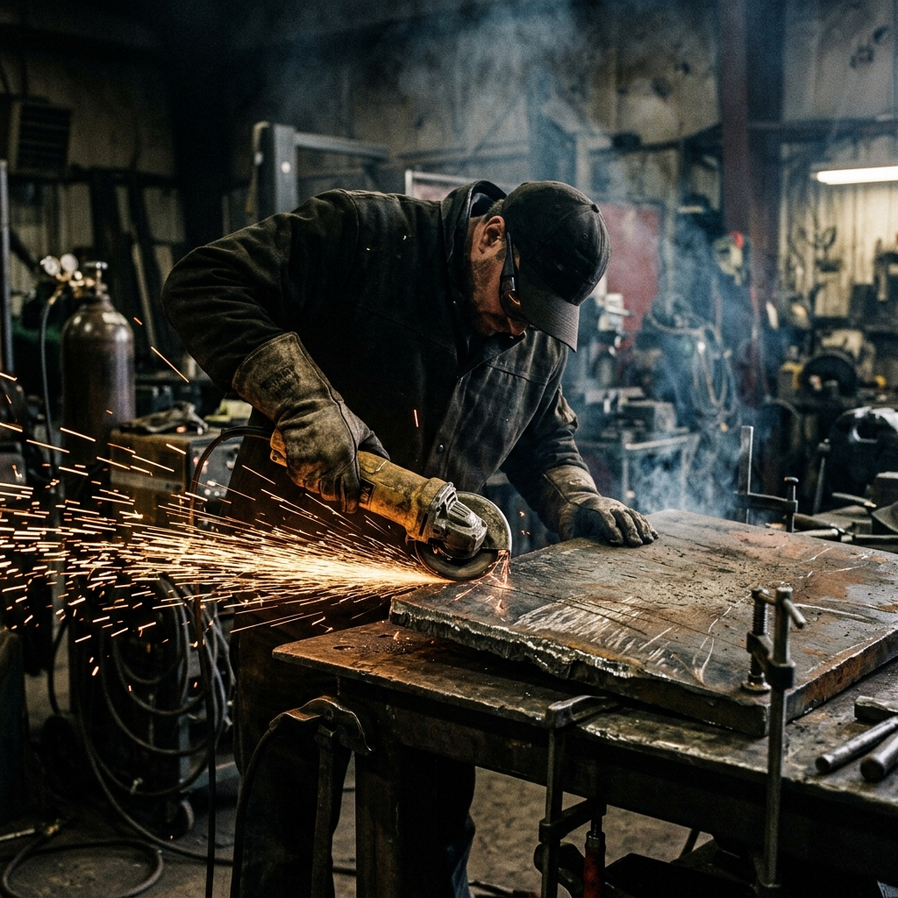
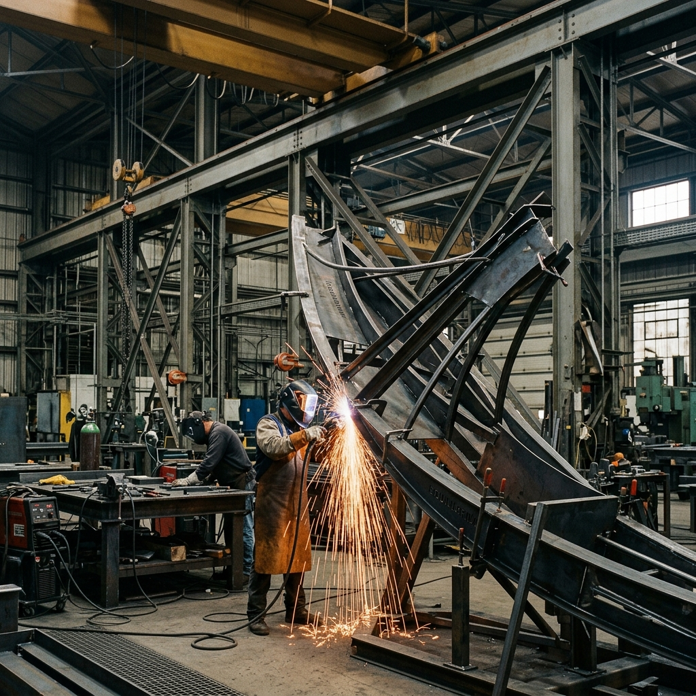
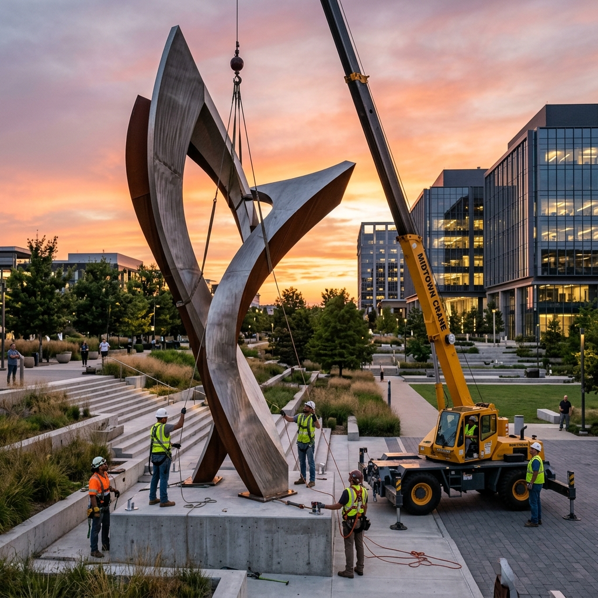

CONCEPT & FEASIBILITY
Every project begins with a deep dive into the site’s topography and architectural context. We create detailed 3D models to ensure structural integrity and aesthetic harmony before the first piece of steel is cut.

INDUSTRIAL FABRICATION
Our workshop uses heavy industrial plasma cutters and precision welding. This is where raw material meets craftsmanship—heat, pressure, and over 20 years of technical expertise.

ASSEMBLY & TESTING
Each component is meticulously assembled and structural integrity is rigorously tested. For large-scale public work, we perform full-scale dry fits in our facility to ensure every joint and weld meets architectural standards.

SITE INSTALLATION
The final journey. Our specialized installation team handles the logistics of transporting and crane-mounting the sculpture. On-site, we perform the final patina finishing, ensuring the work integrates perfectly with its permanent architectural home.
